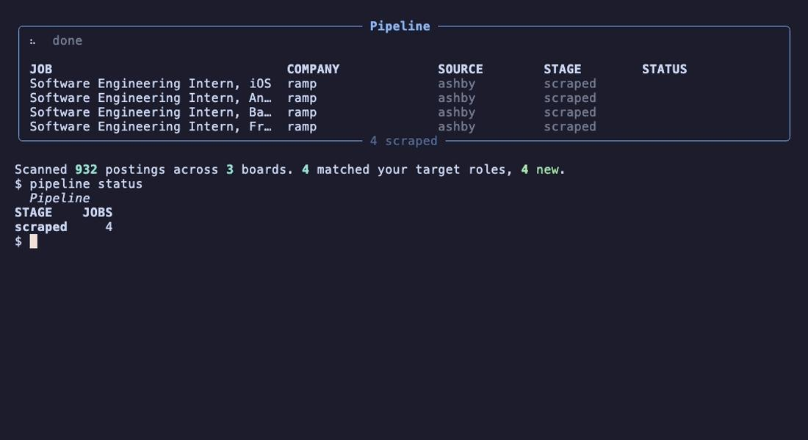

Pipeline
Find jobs you qualify for, write the application, and fill out the form. It asks you before it submits anything.

Overview
2027 internships were starting to open, so I built a tool to make my own job search less painful. Pipeline is free, open source, and runs locally on your own machine.
You tell it what roles you want and which companies you're interested in. It finds relevant openings, researches the companies, and helps you put together applications that fit each role instead of sending the same generic one everywhere.
How it works
- Scrapes job boards and keeps only the postings you actually qualify for
- Researches the company, then writes the cover letter and screening answers
- Tailors your resume to the posting
- Opens a browser and fills out the application form
- Stops and asks you before it submits anything
It won't make anything up about you, and your resume and answers stay on your computer.
Setup
You don't need to know Python. Every install step in the README is copy-paste, and it works on Mac and Windows.